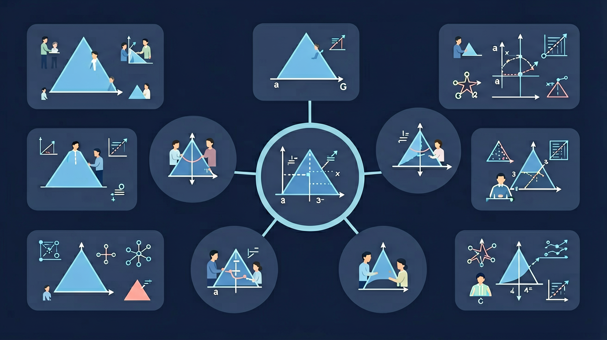

两腰相等，两底角相等——探索等腰三角形的对称美！

🎯 能说出等腰三角形'等边对等角'的性质定理
🎯 能判断给定三角形是否为等腰三角形并说明依据
🎯 能计算等腰三角形中未知角度或边长
❓ 为啥等腰三角形的对称轴一定是顶角平分线？
❓ 等腰三角形两腰上的高相等吗？
❓ 用尺规咋画标准的等腰三角形？
学完这一课，这些问题你都能自信地回答。
等腰三角形的定义是？
已知等腰△ABC中AB=AC，∠B=50°，则∠A=？
等腰三角形两腰相等，两底角相等（等边对等角）。顶角平分线、底边上的中线、底边上的高互相重合，即“三线合一”。等边三角形是特殊的等腰三角形，三个角都是 60°。
已知顶角求底角用 (180°−顶角)/2；已知一个角但没说是顶角还是底角时要分类讨论，避免漏解。
常见误区：常见误区是遇到“一个内角为 100°”这类条件不分类讨论，漏掉可能的情形。
等腰三角形“三线合一”指的是？
等腰三角形顶角为 40°，则底角为？
And：学生已学过三角形基本性质
But：但容易忽略'两边相等'的隐含条件
Therefore：明确等腰三角形定义是解题基础
两边相等的三角形叫等腰三角形，相等的边叫腰，另一边叫底边。两腰夹角叫顶角，腰与底边夹角叫底角。例如△ABC中AB=AC=5cm，BC=6cm，则∠B和∠C是底角，度数相等。
🌍 折叠椅展开时两侧金属架长度相同，构成等腰三角形，保证座椅平衡。
以下哪个是等腰三角形的必选项？
And：已知等腰三角形定义
But：不会用'等边对等角'性质解题
Therefore：掌握性质才能灵活计算角度
等腰三角形两底角相等（等边对等角），顶角平分线垂直平分底边。例如△DEF中DE=DF=8cm，∠EDF=40°，则∠DEF=∠DFE=(180°-40°)/2=70°，用圆规可验证两底角相等。
🌍 埃及金字塔侧面是两个等腰三角形，施工时用等角性质确保四面对称。
等腰△ABC中∠A=80°，则∠B=？
And：已会计算等腰三角形角度
But：忽视对称性在证明中的作用
Therefore：用对称思想简化几何证明
等腰三角形是轴对称图形，对称轴是顶角平分线。利用对称性可快速证明线段/角相等。例如在等腰△GHI中作对称轴GL，能直接证明GH=GI且∠HGL=∠IGL，比全等三角形证法更快捷。
🌍 蝴蝶翅膀的等腰三角形花纹，对称设计帮助保持飞行平衡。
如何用最简步骤证明等腰三角形两底角相等？
同学们注意啦！等腰三角形可不是课本上的呆板图形，它可是建筑师们的最爱工具。你想过为什么很多屋顶要设计成等腰三角形吗？说白了，等腰的两条边像一对孪生兄弟，让重量分布特别均匀。比如希腊帕特农神庙的屋顶，两个斜边完全对称，能稳稳分散雨水重量。再往深处想，等腰的对称轴就像建筑的'脊椎骨'，所有受力都沿着这条线平衡——这可比随便画个三角形聪明多了！下次见到金字塔照片时你想想，要是把四个面换成歪七扭八的三角形...
生活实例：你家的折叠梯打开时就是个活生生的等腰三角形！两条等长的折叠杆是腰，地面是底边。工人叔叔修空调时，梯子能稳稳立住不摇晃，秘密就在这个等腰结构让重心正好落在对称轴上。不信你观察下超市货架梯、露营帐篷支架，到处都是这个原理。
来玩个找茬游戏！你的课本上画着标准等腰三角形，但你知道吗？蜜蜂巢房的横截面就是完美的等腰六边形——没错，六个等腰三角形拼成的！为什么进化选择了这个形状？你用手指比划下就明白：当所有内角都是120度时，蜜蜂用最少蜂蜡就能造出最大空间。还有更神奇的：许多蝴蝶翅膀花纹的骨架线，蜥蜴背部鳞片的排列模式，甚至蒲公英种子飘散的抛物线，都藏着等腰三角形的数学密码。生物学家发现，这种形状能让能量消耗最小化，说白了就是'偷懒却高效'的生存智慧！
生活实例：下次吃披萨时注意看切法！标准的8等分切法会产生8个等腰三角形切片，这样每块都有等量的饼边和馅料。要是乱切成大小不等的三角形，最后拿到的可能全是饼边——这可是经过数学家验证的最公平分法哦！
今天我们当回机器人工程师！机械臂的每个关节都在和等腰三角形玩捉迷藏。比如挖掘机的铲斗控制，当大臂和小臂长度相同时（就是等腰的腰），油缸只需要很小的推力就能举起沉重沙土。这就像你用扫帚够高处物品时，双手握成等腰夹角最省力。更酷的是，航天器的太阳能板展开机构必须精确计算等腰角度——太窄会遮挡阳光，太宽又可能被宇宙尘埃击穿。下次玩遥控车时你想想，为什么前轮转向连杆总是做成等腰梯形？
生活实例：超市的自动感应门能平稳滑动，全靠顶端隐藏的等腰三角形连杆机构。当电机推动一个顶点时，两扇门就像等腰的腰一样同步开合。要是换成不等腰设计，可能就会出现一扇门快一扇门慢的搞笑场面了！
开放任务：用三步写出你如何向同学讲清「等腰三角形」。
将等腰三角形沿对称轴折叠可完全重合
两底角相等源于对称性，顶角平分线同时是底边中垂线
与等边三角形对比：等腰只需两腰相等，等边需三边相等
观察房顶、衣架等实物中的等腰结构
利用对称性解决桥梁斜拉索长度计算问题
下列哪个条件不能证明等腰三角形？
用5米斜梁和8米水平梁搭建等腰三角形屋顶模型
先独立作答，再点选项查看对错与错因。
若等腰三角形顶角为80°，则底角为
用尺规作等腰三角形时，必须先确定
等腰三角形对称轴的性质是
等腰△ABC中，AB=AC=6cm，BC=4cm，则高AD=____cm
答案：4√2
利用勾股定理，√(6²-2²)=√32=4√2
等腰三角形____条对称轴
答案：1
仅顶角到底边中垂线为对称轴
✅ 强调'两腰相等'的表述规范
💡 混淆'腰'与'底边'概念
✅ 演示反例说明其不成立
💡 未掌握全等三角形判定定理
口诀：两腰相等底角同，对称轴过顶角中
类比：像可折叠的衣架，两边对称才能挂稳
（中考题）等腰三角形一腰上的高与另一腰夹角为40°，则顶角度数为
用尺规作等腰三角形时，必须先画
（迁移题）等腰三角形斜梁与水平面成30°角，另一侧斜梁应如何设计？
点击节点跳转到对应章节；可切换布局。